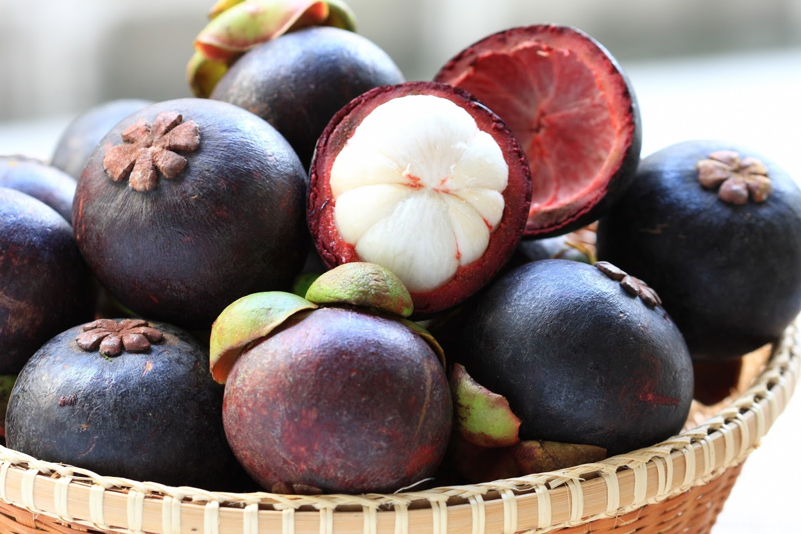

Manggis (Garcinia mangostana L.) adalah sejenis pohon hijau abadi dari daerah tropika yang diyakini berasal dari Semenanjung Malaya dan menyebar ke Kepulauan Nusantara. Tumbuh hingga mencapai 7 sampai 25 meter. Buahnya juga disebut manggis, berwarna merah keunguan ketika matang, meskipun ada pula varian yang kulitnya berwarna merah. Buah manggis dalam perdagangan dikenal sebagai "ratu buah", sebagai pasangan durian, si "raja buah". Buah ini mengandung mempunyai aktivitas antiinflamasi dan antioksidan. Sehingga di luar negeri buah manggis dikenal sebagai buah yang memiliki kadar antioksidan tertinggi di dunia. Manggis berkerabat dengan kokam, asam kandis dan asam gelugur, rempah bumbu dapur dari tradisi boga India dan Sumatra.
Manggis merupakan sebuah pohon tropis yang tumbuh dalam suhu hangat dan stabil, paparan suhu di bawah 0 °C (32 °F) untuk jangka waktu yang lama, umumnya akan membunuh tanaman dewasa. Hortikulturis yang berpengalaman telah menumbuhkan spesies ini di luar ruangan dan membawanya untuk dikembangkan di daerah ekstrem, selatan Florida.
Manggis bersifat apomiksis obligat, biji tidak berasal dari fertilisasi dan diduga mempunyai keanekaragaman genetik sempit, sehingga diperkirakan manggis di alam hanya satu klon dan sifatnya sama dengan induknya. Kenyataan di lapang menunjukkan adanya keanekaragaman tanaman manggis yang mungkin disebabkan faktor lingkungan mau pun faktor genetik akibat mutasi alami sejalan dengan sejarah tanaman manggis yang telah berumur ribuan tahun.
Penelitian yang diterbitkan oleh Current Molecular Medicine menemukan bahwa buah-buahan termasuk manggis mampu mencegah perkembangan dan penyebaran sel kanker. Hal ini dikarenakan adanya kandungan seperti xanthone yang bertindak sebagai antioksidan dan antiinflamasi. Senyawa xanthone inilah yang dipercaya mampu melawan pertumbuhan sel kanker usus besar, payudara, perut, dan paru-paru. Bahkan, senyawa ini juga dikatakan dapat menjadi antioksidan yang lebih ampuh lima kali lipat dibandingkan vitamin C, lho, Toppers.
Apakah Toppers sedang ingin menurunkan berat badan? Jika iya, manggis mungkin bisa menjadi pilihan buah yang tepat untukmu. Pasalnya, buah satu ini sudah populer akan potensinya untuk membantu menurunkan berat badan, Toppers. Ini juga telah dibuktikan oleh suatu penelitian yang diterbitkan oleh Journal of Medicinal Food dan Nutrition Journal yang menunjukkan bahwa buah manggis mampu menurunkan berat badan pada tikus serta manusia.
PEMBAYARAN DI TEMPAT / COD
hanya untuk Bogor, Tanggerang dan Depok
POTONGAN ONGKIR Rp.6.500,-
UNTUK PEMBELIAN VIA TRANSFER